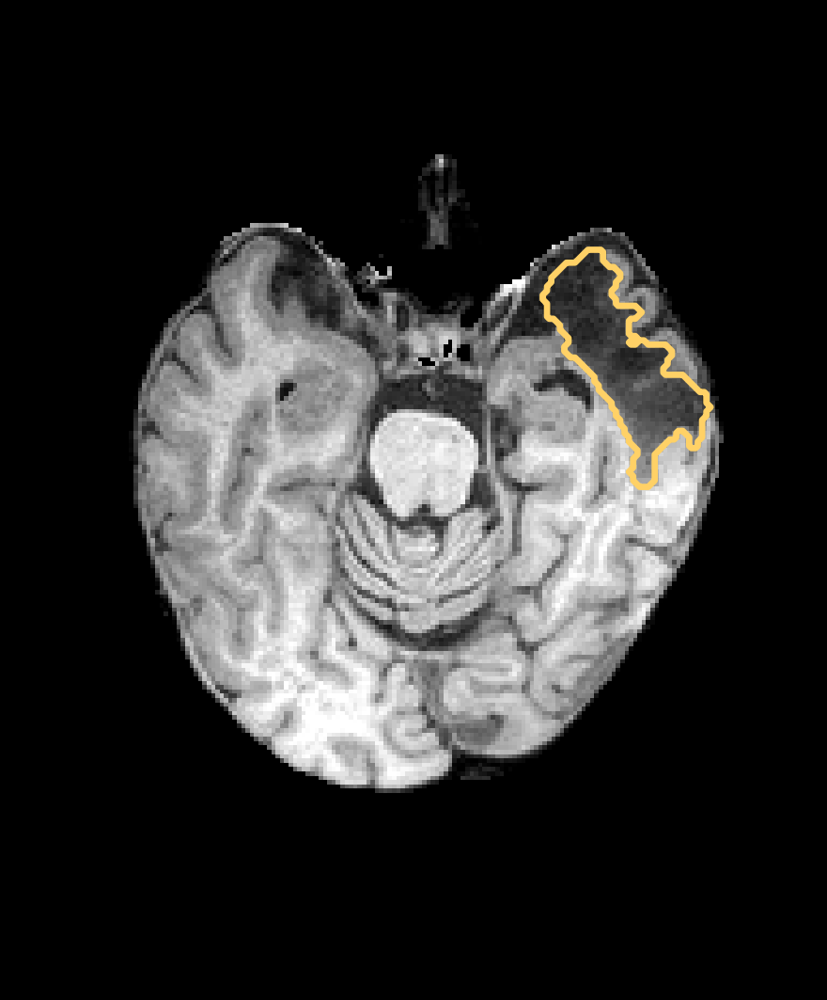
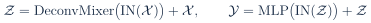
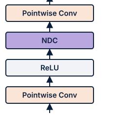
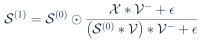
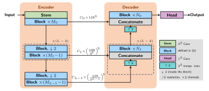
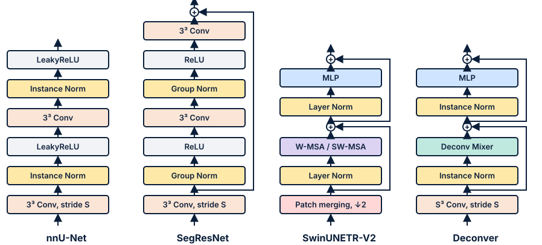
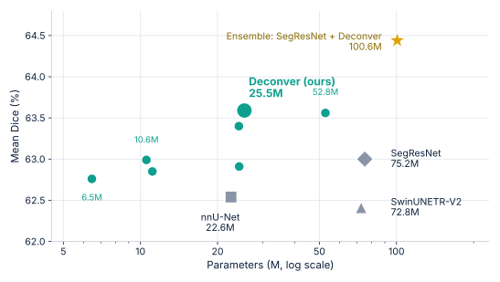
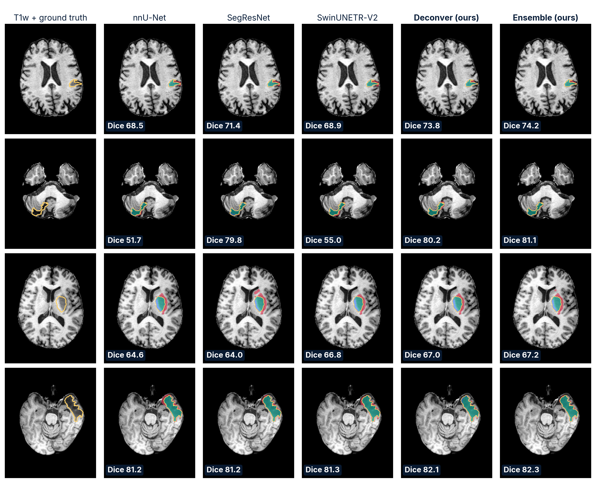

The problem ISLES’26
Segment ischemic stroke lesions from T1-weighted MRI alone, across lesion stages and imaging centers.
- No diffusion contrast. The DWI/ADC signal that acute delineation usually relies on is absent.
- Acute to chronic lesions, whose T1 appearance changes markedly with time since onset.
- More than 60 centers at native resolution: spacing, field of view and orientation all vary.
- Generalization is the operative difficulty, not accuracy under harmonized acquisition.

Key idea Deconver
Keep the U-shaped backbone and the transformer block layout, but replace self-attention with a Deconv Mixer built around a nonnegative deconvolution (NDC) layer.


The nonnegative feature map X is treated as a blurred observation of a latent source S, seen through a learnable nonnegative filter V:
From a learned initialization S(0), a single multiplicative update recovers a sharper source (V−: adjoint filter, ε = 10−8):

- Provably safe: never increases the reconstruction error, keeps nonnegativity, is differentiable: V is trained end to end.
- Cheap context: depthwise groups, expansion ratio 4, one iteration: spatial dependencies without attention’s cost.
- Restores high-frequency detail while suppressing artifacts; descends from Factorizer (3rd in ISLES’22) and keeps its nonnegativity prior.
Controlled comparison one pipeline, four blocks
All four networks share the encoder–decoder backbone of Fig. 1a: level ℓ carries Cℓ channels and holds Mℓ encoder and Nℓ decoder blocks; each stage halves the resolution and doubles the channels. Only the block repeated at each level differs (Fig. 1b; data flows upwards, S = 2 in the first block of a stage).


Results accuracy is not aligned with capacity

| Model | [Mℓ] | C0 | Params (M) | Dice (%) |
|---|---|---|---|---|
| nnU-Net | [1,1,1,1,1] | 32 | 22.57 | 62.54 |
| SegResNet | [1,2,2,4] | 64 | 75.17 | 63.00 |
| SwinUNETR-V2 | [2,2,2,2] | 48 | 72.76 | 62.41 |
| Deconver | [1,2,2,4] | 64 | 25.46 | 63.59 |
| Ensemble (SegResNet + Deconver) | 100.63 | 64.44 | ||
| [Mℓ] | C0 | k | Params (M) | Dice (%) | Takeaway |
|---|---|---|---|---|---|
| [1,2,2,4] | 32 | 3 | 6.46 | 62.76 | smallest variant, still beats nnU-Net and SwinUNETR-V2 |
| [1,1,1,1,1] | 32 | 3 | 10.55 | 62.99 | matches SegResNet at 7.1× fewer parameters |
| [1,1,1,1,1] | 32 | 5 | 11.13 | 62.85 | larger NDC kernel: no gain |
| [1,1,1,1,1] | 64 | 3 | 24.23 | 63.40 | twice the width: +0.41 |
| [1,1,1,1,1,1] | 32 | 3 | 24.30 | 62.91 | sixth level: 2.3× the parameters, no gain |
| [1,2,2,4] | 64 | 3 | 25.46 | 63.59 | twice the width: +0.83; the model of Table 1 |
| [1,2,2,4,4] | 64 | 3 | 52.77 | 63.56 | fifth level: 2× the parameters, no gain |
Qualitative results unseen validation cases
